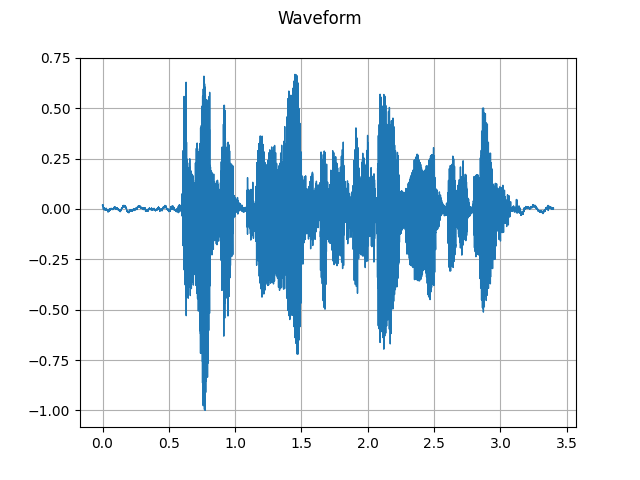
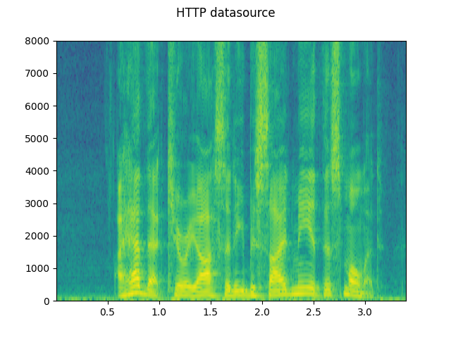
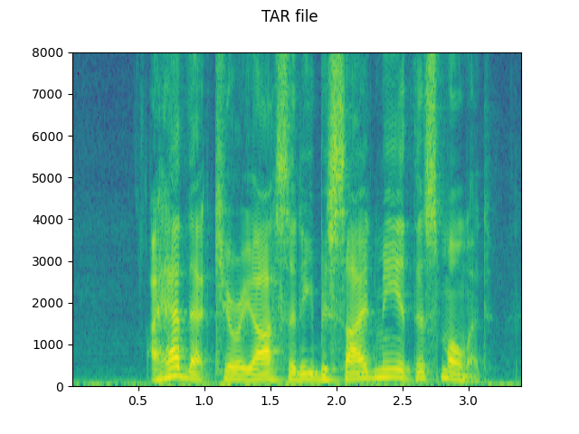
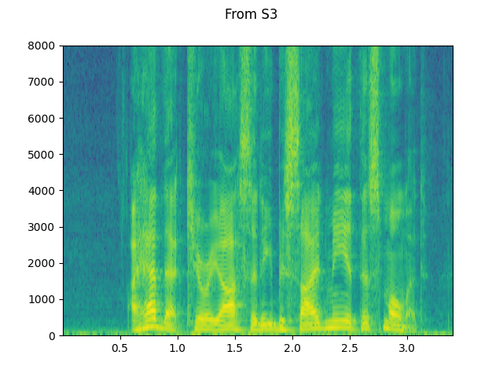

Note
Click here to download the full example code
Audio I/O¶
torchaudio integrates libsox and provides a rich set of audio I/O.
# When running this tutorial in Google Colab, install the required packages
# with the following.
# !pip install torchaudio boto3
import torch
import torchaudio
print(torch.__version__)
print(torchaudio.__version__)
Out:
1.10.0+cpu
0.10.0+cpu
Preparing data and utility functions (skip this section)¶
#@title Prepare data and utility functions. {display-mode: "form"}
#@markdown
#@markdown You do not need to look into this cell.
#@markdown Just execute once and you are good to go.
#@markdown
#@markdown In this tutorial, we will use a speech data from [VOiCES dataset](https://iqtlabs.github.io/voices/), which is licensed under Creative Commos BY 4.0.
import io
import os
import requests
import tarfile
import boto3
from botocore import UNSIGNED
from botocore.config import Config
import matplotlib.pyplot as plt
from IPython.display import Audio, display
_SAMPLE_DIR = "_assets"
SAMPLE_WAV_URL = "https://pytorch-tutorial-assets.s3.amazonaws.com/steam-train-whistle-daniel_simon.wav"
SAMPLE_WAV_PATH = os.path.join(_SAMPLE_DIR, "steam.wav")
SAMPLE_MP3_URL = "https://pytorch-tutorial-assets.s3.amazonaws.com/steam-train-whistle-daniel_simon.mp3"
SAMPLE_MP3_PATH = os.path.join(_SAMPLE_DIR, "steam.mp3")
SAMPLE_GSM_URL = "https://pytorch-tutorial-assets.s3.amazonaws.com/steam-train-whistle-daniel_simon.gsm"
SAMPLE_GSM_PATH = os.path.join(_SAMPLE_DIR, "steam.gsm")
SAMPLE_WAV_SPEECH_URL = "https://pytorch-tutorial-assets.s3.amazonaws.com/VOiCES_devkit/source-16k/train/sp0307/Lab41-SRI-VOiCES-src-sp0307-ch127535-sg0042.wav"
SAMPLE_WAV_SPEECH_PATH = os.path.join(_SAMPLE_DIR, "speech.wav")
SAMPLE_TAR_URL = "https://pytorch-tutorial-assets.s3.amazonaws.com/VOiCES_devkit.tar.gz"
SAMPLE_TAR_PATH = os.path.join(_SAMPLE_DIR, "sample.tar.gz")
SAMPLE_TAR_ITEM = "VOiCES_devkit/source-16k/train/sp0307/Lab41-SRI-VOiCES-src-sp0307-ch127535-sg0042.wav"
S3_BUCKET = "pytorch-tutorial-assets"
S3_KEY = "VOiCES_devkit/source-16k/train/sp0307/Lab41-SRI-VOiCES-src-sp0307-ch127535-sg0042.wav"
def _fetch_data():
os.makedirs(_SAMPLE_DIR, exist_ok=True)
uri = [
(SAMPLE_WAV_URL, SAMPLE_WAV_PATH),
(SAMPLE_MP3_URL, SAMPLE_MP3_PATH),
(SAMPLE_GSM_URL, SAMPLE_GSM_PATH),
(SAMPLE_WAV_SPEECH_URL, SAMPLE_WAV_SPEECH_PATH),
(SAMPLE_TAR_URL, SAMPLE_TAR_PATH),
]
for url, path in uri:
with open(path, 'wb') as file_:
file_.write(requests.get(url).content)
_fetch_data()
def print_stats(waveform, sample_rate=None, src=None):
if src:
print("-" * 10)
print("Source:", src)
print("-" * 10)
if sample_rate:
print("Sample Rate:", sample_rate)
print("Shape:", tuple(waveform.shape))
print("Dtype:", waveform.dtype)
print(f" - Max: {waveform.max().item():6.3f}")
print(f" - Min: {waveform.min().item():6.3f}")
print(f" - Mean: {waveform.mean().item():6.3f}")
print(f" - Std Dev: {waveform.std().item():6.3f}")
print()
print(waveform)
print()
def plot_waveform(waveform, sample_rate, title="Waveform", xlim=None, ylim=None):
waveform = waveform.numpy()
num_channels, num_frames = waveform.shape
time_axis = torch.arange(0, num_frames) / sample_rate
figure, axes = plt.subplots(num_channels, 1)
if num_channels == 1:
axes = [axes]
for c in range(num_channels):
axes[c].plot(time_axis, waveform[c], linewidth=1)
axes[c].grid(True)
if num_channels > 1:
axes[c].set_ylabel(f'Channel {c+1}')
if xlim:
axes[c].set_xlim(xlim)
if ylim:
axes[c].set_ylim(ylim)
figure.suptitle(title)
plt.show(block=False)
def plot_specgram(waveform, sample_rate, title="Spectrogram", xlim=None):
waveform = waveform.numpy()
num_channels, num_frames = waveform.shape
time_axis = torch.arange(0, num_frames) / sample_rate
figure, axes = plt.subplots(num_channels, 1)
if num_channels == 1:
axes = [axes]
for c in range(num_channels):
axes[c].specgram(waveform[c], Fs=sample_rate)
if num_channels > 1:
axes[c].set_ylabel(f'Channel {c+1}')
if xlim:
axes[c].set_xlim(xlim)
figure.suptitle(title)
plt.show(block=False)
def play_audio(waveform, sample_rate):
waveform = waveform.numpy()
num_channels, num_frames = waveform.shape
if num_channels == 1:
display(Audio(waveform[0], rate=sample_rate))
elif num_channels == 2:
display(Audio((waveform[0], waveform[1]), rate=sample_rate))
else:
raise ValueError("Waveform with more than 2 channels are not supported.")
def _get_sample(path, resample=None):
effects = [
["remix", "1"]
]
if resample:
effects.extend([
["lowpass", f"{resample // 2}"],
["rate", f'{resample}'],
])
return torchaudio.sox_effects.apply_effects_file(path, effects=effects)
def get_sample(*, resample=None):
return _get_sample(SAMPLE_WAV_PATH, resample=resample)
def inspect_file(path):
print("-" * 10)
print("Source:", path)
print("-" * 10)
print(f" - File size: {os.path.getsize(path)} bytes")
print(f" - {torchaudio.info(path)}")
Quering audio metadata¶
Function torchaudio.info fetches audio metadata. You can provide
a path-like object or file-like object.
metadata = torchaudio.info(SAMPLE_WAV_PATH)
print(metadata)
Out:
AudioMetaData(sample_rate=44100, num_frames=109368, num_channels=2, bits_per_sample=16, encoding=PCM_S)
Where
sample_rateis the sampling rate of the audionum_channelsis the number of channelsnum_framesis the number of frames per channelbits_per_sampleis bit depthencodingis the sample coding format
encoding can take on one of the following values:
"PCM_S": Signed integer linear PCM"PCM_U": Unsigned integer linear PCM"PCM_F": Floating point linear PCM"FLAC": Flac, Free Lossless Audio Codec"ULAW": Mu-law, [wikipedia]"ALAW": A-law [wikipedia]"MP3": MP3, MPEG-1 Audio Layer III"VORBIS": OGG Vorbis [xiph.org]"AMR_NB": Adaptive Multi-Rate [wikipedia]"AMR_WB": Adaptive Multi-Rate Wideband [wikipedia]"OPUS": Opus [opus-codec.org]"GSM": GSM-FR [wikipedia]"UNKNOWN"None of above
Note
bits_per_samplecan be0for formats with compression and/or variable bit rate (such as MP3).num_framescan be0for GSM-FR format.
metadata = torchaudio.info(SAMPLE_MP3_PATH)
print(metadata)
metadata = torchaudio.info(SAMPLE_GSM_PATH)
print(metadata)
Out:
AudioMetaData(sample_rate=44100, num_frames=110559, num_channels=2, bits_per_sample=0, encoding=MP3)
AudioMetaData(sample_rate=8000, num_frames=0, num_channels=1, bits_per_sample=0, encoding=GSM)
Querying file-like object¶
info works on file-like objects.
print("Source:", SAMPLE_WAV_URL)
with requests.get(SAMPLE_WAV_URL, stream=True) as response:
metadata = torchaudio.info(response.raw)
print(metadata)
Out:
Source: https://pytorch-tutorial-assets.s3.amazonaws.com/steam-train-whistle-daniel_simon.wav
AudioMetaData(sample_rate=44100, num_frames=109368, num_channels=2, bits_per_sample=16, encoding=PCM_S)
Note When passing a file-like object, info does not read
all of the underlying data; rather, it reads only a portion
of the data from the beginning.
Therefore, for a given audio format, it may not be able to retrieve the
correct metadata, including the format itself.
The following example illustrates this.
Use argument
formatto specify the audio format of the input.The returned metadata has
num_frames = 0
print("Source:", SAMPLE_MP3_URL)
with requests.get(SAMPLE_MP3_URL, stream=True) as response:
metadata = torchaudio.info(response.raw, format="mp3")
print(f"Fetched {response.raw.tell()} bytes.")
print(metadata)
Out:
Source: https://pytorch-tutorial-assets.s3.amazonaws.com/steam-train-whistle-daniel_simon.mp3
Fetched 8192 bytes.
AudioMetaData(sample_rate=44100, num_frames=0, num_channels=2, bits_per_sample=0, encoding=MP3)
Loading audio data into Tensor¶
To load audio data, you can use torchaudio.load.
This function accepts a path-like object or file-like object as input.
The returned value is a tuple of waveform (Tensor) and sample rate
(int).
By default, the resulting tensor object has dtype=torch.float32 and
its value range is normalized within [-1.0, 1.0].
For the list of supported format, please refer to the torchaudio documentation.
waveform, sample_rate = torchaudio.load(SAMPLE_WAV_SPEECH_PATH)
print_stats(waveform, sample_rate=sample_rate)
plot_waveform(waveform, sample_rate)
plot_specgram(waveform, sample_rate)
play_audio(waveform, sample_rate)
- 
Out:
Sample Rate: 16000
Shape: (1, 54400)
Dtype: torch.float32
- Max: 0.668
- Min: -1.000
- Mean: 0.000
- Std Dev: 0.122
tensor([[0.0183, 0.0180, 0.0180, ..., 0.0018, 0.0019, 0.0032]])
<IPython.lib.display.Audio object>
Loading from file-like object¶
torchaudio’s I/O functions now support file-like objects. This
allows for fetching and decoding audio data from locations
within and beyond the local file system.
The following examples illustrate this.
# Load audio data as HTTP request
with requests.get(SAMPLE_WAV_SPEECH_URL, stream=True) as response:
waveform, sample_rate = torchaudio.load(response.raw)
plot_specgram(waveform, sample_rate, title="HTTP datasource")
# Load audio from tar file
with tarfile.open(SAMPLE_TAR_PATH, mode='r') as tarfile_:
fileobj = tarfile_.extractfile(SAMPLE_TAR_ITEM)
waveform, sample_rate = torchaudio.load(fileobj)
plot_specgram(waveform, sample_rate, title="TAR file")
# Load audio from S3
client = boto3.client('s3', config=Config(signature_version=UNSIGNED))
response = client.get_object(Bucket=S3_BUCKET, Key=S3_KEY)
waveform, sample_rate = torchaudio.load(response['Body'])
plot_specgram(waveform, sample_rate, title="From S3")
- 
- 
- 
Tips on slicing¶
Providing num_frames and frame_offset arguments restricts
decoding to the corresponding segment of the input.
The same result can be achieved using vanilla Tensor slicing,
(i.e. waveform[:, frame_offset:frame_offset+num_frames]). However,
providing num_frames and frame_offset arguments is more
efficient.
This is because the function will end data acquisition and decoding once it finishes decoding the requested frames. This is advantageous when the audio data are transferred via network as the data transfer will stop as soon as the necessary amount of data is fetched.
The following example illustrates this.
# Illustration of two different decoding methods.
# The first one will fetch all the data and decode them, while
# the second one will stop fetching data once it completes decoding.
# The resulting waveforms are identical.
frame_offset, num_frames = 16000, 16000 # Fetch and decode the 1 - 2 seconds
print("Fetching all the data...")
with requests.get(SAMPLE_WAV_SPEECH_URL, stream=True) as response:
waveform1, sample_rate1 = torchaudio.load(response.raw)
waveform1 = waveform1[:, frame_offset:frame_offset+num_frames]
print(f" - Fetched {response.raw.tell()} bytes")
print("Fetching until the requested frames are available...")
with requests.get(SAMPLE_WAV_SPEECH_URL, stream=True) as response:
waveform2, sample_rate2 = torchaudio.load(
response.raw, frame_offset=frame_offset, num_frames=num_frames)
print(f" - Fetched {response.raw.tell()} bytes")
print("Checking the resulting waveform ... ", end="")
assert (waveform1 == waveform2).all()
print("matched!")
Out:
Fetching all the data...
- Fetched 108844 bytes
Fetching until the requested frames are available...
- Fetched 65580 bytes
Checking the resulting waveform ... matched!
Saving audio to file¶
To save audio data in formats interpretable by common applications,
you can use torchaudio.save.
This function accepts a path-like object or file-like object.
When passing a file-like object, you also need to provide argument format
so that the function knows which format it should use. In the
case of a path-like object, the function will infer the format from
the extension. If you are saving to a file without an extension, you need
to provide argument format.
When saving WAV-formatted data, the default encoding for float32 Tensor
is 32-bit floating-point PCM. You can provide arguments encoding and
bits_per_sample to change this behavior. For example, to save data
in 16-bit signed integer PCM, you can do the following.
Note Saving data in encodings with lower bit depth reduces the resulting file size but also precision.
waveform, sample_rate = get_sample()
print_stats(waveform, sample_rate=sample_rate)
# Save without any encoding option.
# The function will pick up the encoding which
# the provided data fit
path = f"{_SAMPLE_DIR}/save_example_default.wav"
torchaudio.save(path, waveform, sample_rate)
inspect_file(path)
# Save as 16-bit signed integer Linear PCM
# The resulting file occupies half the storage but loses precision
path = f"{_SAMPLE_DIR}/save_example_PCM_S16.wav"
torchaudio.save(
path, waveform, sample_rate,
encoding="PCM_S", bits_per_sample=16)
inspect_file(path)
Out:
Sample Rate: 44100
Shape: (1, 109368)
Dtype: torch.float32
- Max: 0.508
- Min: -0.449
- Mean: -0.000
- Std Dev: 0.122
tensor([[0.0027, 0.0063, 0.0092, ..., 0.0032, 0.0047, 0.0052]])
----------
Source: _assets/save_example_default.wav
----------
- File size: 437530 bytes
- AudioMetaData(sample_rate=44100, num_frames=109368, num_channels=1, bits_per_sample=32, encoding=PCM_F)
----------
Source: _assets/save_example_PCM_S16.wav
----------
- File size: 218780 bytes
- AudioMetaData(sample_rate=44100, num_frames=109368, num_channels=1, bits_per_sample=16, encoding=PCM_S)
torchaudio.save can also handle other formats. To name a few:
waveform, sample_rate = get_sample(resample=8000)
formats = [
"mp3",
"flac",
"vorbis",
"sph",
"amb",
"amr-nb",
"gsm",
]
for format in formats:
path = f"{_SAMPLE_DIR}/save_example.{format}"
torchaudio.save(path, waveform, sample_rate, format=format)
inspect_file(path)
Out:
----------
Source: _assets/save_example.mp3
----------
- File size: 2664 bytes
- AudioMetaData(sample_rate=8000, num_frames=21312, num_channels=1, bits_per_sample=0, encoding=MP3)
----------
Source: _assets/save_example.flac
----------
- File size: 47315 bytes
- AudioMetaData(sample_rate=8000, num_frames=19840, num_channels=1, bits_per_sample=24, encoding=FLAC)
----------
Source: _assets/save_example.vorbis
----------
- File size: 9967 bytes
- AudioMetaData(sample_rate=8000, num_frames=19840, num_channels=1, bits_per_sample=0, encoding=VORBIS)
----------
Source: _assets/save_example.sph
----------
- File size: 80384 bytes
- AudioMetaData(sample_rate=8000, num_frames=19840, num_channels=1, bits_per_sample=32, encoding=PCM_S)
----------
Source: _assets/save_example.amb
----------
- File size: 79418 bytes
- AudioMetaData(sample_rate=8000, num_frames=19840, num_channels=1, bits_per_sample=32, encoding=PCM_F)
----------
Source: _assets/save_example.amr-nb
----------
- File size: 1618 bytes
- AudioMetaData(sample_rate=8000, num_frames=19840, num_channels=1, bits_per_sample=0, encoding=AMR_NB)
----------
Source: _assets/save_example.gsm
----------
- File size: 4092 bytes
- AudioMetaData(sample_rate=8000, num_frames=0, num_channels=1, bits_per_sample=0, encoding=GSM)
Saving to file-like object¶
Similar to the other I/O functions, you can save audio to file-like
objects. When saving to a file-like object, argument format is
required.
waveform, sample_rate = get_sample()
# Saving to bytes buffer
buffer_ = io.BytesIO()
torchaudio.save(buffer_, waveform, sample_rate, format="wav")
buffer_.seek(0)
print(buffer_.read(16))
Out:
b'RIFF\x12\xad\x06\x00WAVEfmt '
Total running time of the script: ( 0 minutes 2.110 seconds)